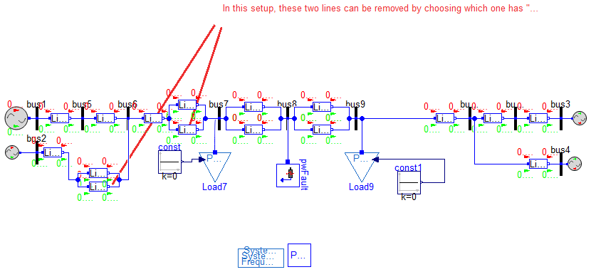

Tests for base models
Includes test models for base networks.
Extends from Modelica.Icons.ExamplesPackage (Icon for packages containing runnable examples).
| Name | Description |
|---|---|
| Tests the base network model |
 Example2.Base.Networks.Tests.TestBase
Example2.Base.Networks.Tests.TestBase
Tests the base network model

Extends from Modelica.Icons.Example (Icon for runnable examples), Example2.Base.Networks.Base (Base network model, 11-buses, loads, and power flow data).
| Type | Name | Default | Description |
|---|---|---|---|
| Real | r | 0.0001 | |
| Real | x | 0.001 | |
| Real | b | 0.00175*0.5 | |
| Real | percent | 0.75 | |
| PF0 | PF_results | redeclare Data.PF0 PF_results | |
| Time | t1 | Modelica.Constants.inf | [s] |
| Bus Fault Parameters | |||
| PerUnit | R | 0 | Resistance [1] |
| PerUnit | X | 1e-5 | Reactance [1] |
| Time | t1busfault | Modelica.Constants.inf | Start time of the fault [s] |
| Time | t2busfault | Modelica.Constants.inf | End time of the fault [s] |